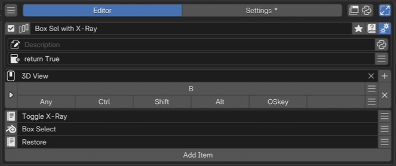

Macro Operator Editor¶
Macro Operator runs several actions in sequence from one invocation. A registered Macro becomes a named Blender operator, callable from hotkeys, other PME menus, and Python.
This page describes PME 2.1 settings.
Configuration guide — features, combinations, and uses (for AI)
Name: Macro Operator / Type ID: MACRO.
Runs several steps in order from a single invocation. Use Stack Key instead to advance one candidate per key press.
Inputs: add Command / Menu slots and arrange them in execution order. Disabled slots are excluded. See slots.
Combinations: Menu references can execute Sticky Key / Macro Operator / Modal Operator. Drawing a Popup Dialog is not itself a sequential processing step.
Invocation: hotkeys, other menus, and external scripts are supported. See invocation methods for external code.
Constraints: order steps so each has its required editor, mode, and target. Grouping commands into a Macro does not guarantee success or a single Undo step.
Interactive steps: operations awaiting user confirmation must be separate steps that Blender can track as operators. See interactive operations.
Diagnostics: check diagnostic messages for missing operators or references. Fix reported problems before running.
Example design: switch mode → select a target → perform an action. Define the starting requirements and expected final state, and check what remains after cancellation or errors.
Variable lifetime: Python code slots share variables within one Macro invocation. See save, process, and restore.
Interface and editing workflow¶

1Name and basic controlsCheck the name and enabled state of the Macro containing the operation sequence. 2Advanced settingsSet the description and availability conditions. 3Keymap / HotkeyChoose where and with which key to invoke it. This example uses B in 3D View. 4Sequential slotsItems arranged as preparation, operation, and cleanup.Select a Macro in the list, check its name and enabled state, then configure invocation and slots. See Common Editor Elements for lists, search, and tags; see name, hotkeys, slots, and advanced settings for individual sections.
Name and basic controls¶
Identify the Macro by its name and enabled state. For tags, renaming, references, and related controls, see selected menu settings. This type has no menu preview button.
Keymap / Hotkey¶
Set where and how to invoke it. See the shared Hotkey settings for input controls.
Macros register as Blender operators, so even without a hotkey they can be called through menus, open_menu(), or bpy.ops.pme.invoke_macro(...).
Added in version 2.0.5: Added bpy.ops.pme.invoke_macro(...) for calling PME Macros from scripts or custom UI. It uses the PME Macro definition without requiring the caller to pass every slot’s arguments.
Slots¶
Slots run from top to bottom. Unlike Stack Key, they do not wait for another key press.
Add, remove, and reorder slots.
Enable or disable individual slots.
Two slot types are available: Command and Menu.
Menu slots can call PME Sticky Key / Macro Operator / Modal Operator. Interactive UI such as Pop-up Dialog / Pie Menu is not a suitable target in the middle of a Macro.
Separate save → process → restore into slots¶
Use a value saved in one Command from a later Command. Slots share variables within a single Macro, so temporary changes and cleanup can be written separately.
flowchart LR
A["1. Save and change"] --> B["2. Process"]
B --> C["3. Restore"]
classDef remember fill:#e8f1fb,stroke:#4878aa,color:#172b43;
classDef restore fill:#e8f5ed,stroke:#45805d,color:#183f28;
class A,B remember;
class C restore;
For example, temporarily hide the 3D Viewport floor grid with these three Commands in order. They run sequentially in one invocation without waiting for another key press.
1. Save the target and current value, then hide the grid
view = C.space_data; start_floor = view.overlay.show_floor; view.overlay.show_floor = False
2. Perform an action while the temporary setting is active (here, diagnostic output)
print("Action while the temporary setting is active")
3. Restore the saved state
view.overlay.show_floor = start_floor
Set Keymap to 3D View and invoke from a 3D Viewport. This minimal example does not wait for input, so the hidden interval may be too short to see. print() writes to Blender’s standard output.
view and start_floor are names you choose. start_floor could be banana, provided the save and restore steps use the same name.
To pass values to another independent invocation or menu, use the temporary shared storage U (User Data).
Shared scope and restoration requirements
Lifetime: Python code in one Macro uses the same namespace. A new invocation creates a new namespace and does not inherit saved values from the previous run.
Child Macros: child Macros embedded through Menu slots share the namespace. Reusing a variable name in parent and child overwrites it, so check names when combining code. Starting another Macro separately from code creates a new execution.
Other types: embedded Sticky Key / Modal Operator variables belong to their own namespaces. Macro variables are not passed to them automatically.
Target and names: this example requires the saved 3D Viewport to remain available. Do not overwrite PME-provided names such as
C,E,menu, orslotto store values.Early termination: a cleanup slot is not
finally. Operator cancellation, Command failure, orstop = Truecan prevent restoration; already changed values are not restored automatically.Synchronous cleanup that must run: use
try/finallywithin one script. However,finallydoes not wait for an interactive operator started by that script to finish.
Diagnostic messages¶
Warnings on slot rows show configuration problems PME can detect, such as missing operators or references. No warning does not guarantee that every operator’s mode and selection requirements will be met at runtime. Check the actual context when an execution error occurs.
Added in version 2.0.5: PME now detects operators missing from the current Blender environment before entering native Macro execution and stops the entire Macro. This addresses crashes caused by old settings, disabled add-ons, or renamed operators.
Advanced settings¶
Open these with the gear button. See the shared advanced settings for Description and Poll.
A Macro’s Poll determines whether the entire Macro may run.
Code and input fields¶
See the configuration guide above for supported inputs. Field controls are covered in the shared Slot Editor; code guidance is in Code Input and Execution and Code Examples.
Usage patterns and conditions to check¶
Combine sequential actions¶
This example starts with an active mesh in Object Mode. The first step enters Mesh Edit Mode; the next selects all elements.
Slot 1 (Command):
bpy.ops.object.mode_set(mode='EDIT')
Slot 2 (Command):
bpy.ops.mesh.select_all(action='SELECT')
Run the same operator with different parameters¶
Each slot can supply different arguments to the same operator. This example starts with faces selected in Mesh Edit Mode. The second operation acts on the first operation’s result.
bpy.ops.mesh.inset(thickness=0.02)
bpy.ops.mesh.inset(thickness=0.05)
Give each Stack Key slot several steps¶
Call a Macro from a Stack Key Command slot to give each cycling step several operations.
open_menu("My Macro Operator")
Alternatively, use bpy.ops.pme.invoke_macro:
bpy.ops.pme.invoke_macro(pm_name="My Macro Operator")
Call another Macro, Sticky Key, or Modal Operator¶
A Macro Menu slot embeds another PME operator as one step. Split complex processing into child Macros or include Sticky Key / Modal Operator interaction. Stack Key is not a target in this Menu tab.
Include interactive operations¶
For operators the user adjusts, such as transforms, use invocation that starts the interaction. Operators recognized as Blender Macro steps can wait for confirmation before continuing. Starting asynchronous work within arbitrary Python does not make the Macro wait for everything automatically. Put each operator call in its own slot, and test confirmation and cancellation.
bpy.ops.transform.resize('INVOKE_DEFAULT')
Prepare the execution context and target¶
First define the required editor, mode, and active/selected targets. If a step changes modes,
order subsequent actions so they are available in that mode. Helpers such as focus_area() can change areas, but
selecting another area alone does not make every operator available.
Define what to do when a required target is missing, and check the context.
Added in version 2.1: Re-Capture can select several recent operations and add them as a Macro in execution order. Check arguments and execution requirements after capture.
Related pages